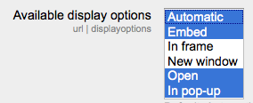

The URL module has additional settings which may be changed by an administrator in Administration > Site administration > Plugins > Activity modules > URL.
Here you can specify the height of the top frame (containing the navigation) if you choose the “in frame” display option. Note:If your theme has a large header then the height should be increased to prevent horizontal and vertical scrollbars.
This setting allows you to turn off the requirement for users to type something into the description box.
Here you can add a password that will connect your users to a secure site. See this forum post for more details.
This setting allows you to add different ways the resource may be displayed on the course page. There are a number of defaults but you can add or change them here. Other display options are:

- In frame - show the Moodle heading and the file description, with the file displayed in a resizeable area below
- New window - very much like ‘in pop-up’, but the new window is a full browser window, with menus and address bar, etc.
Here you can set the defaults for this resource.